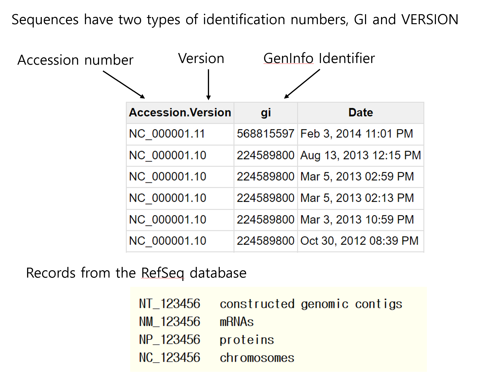
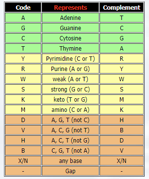

library(rentrez)
require(Biostrings)
entrez_dbs()
entrez_db_summary("nuccore")
covid_paper <- entrez_search(db="pubmed", term="covid19")
covid_paper$ids
names(covid_paper)
covid_paper$ids
covid_link <- entrez_link(db="all", id=covid_paper$ids, dbfrom="pubmed")
names(covid_link)
names(covid_link$links)
head(covid_link$links$pubmed_pubmed)10 Tools for sequences
10.1 Retrive and download sequences from NCBI
카이스트 강의
- rentrez 사용법 이해
nuccore데이터베이스로부터 정보 다운로드
전세계 연구자들이 서열 데이터를 분석하는데 가장 많이 이용하는 사이트 중 하나가 NCBI 이며 따라서 NCBI에서는 연구자들이 데이터베이스에 접근하기위한 편리한 방법을 제공하고 있고 그 중 하나가 Entrez 입니다.
R에서도 Entrez 기능을 도입한 package들이 제공되고 있으며 그 중 하나가 rentrez 입니다. https://www.ncbi.nlm.nih.gov/books/NBK25500/ 이 곳의 Downloading Full Records 를 참고하시면 좋습니다. Entrez는 대략적으로 다음 9개의 유틸리티를 제공합니다.
EInfo (database statistics)
ESearch (text searches)
EPost (UID uploads)
ESummary (document summary downloads)
EFetch (data record downloads)
ELink (Entrez links)
EGQuery (global query)
ESpell (spelling suggestions)
ECitMatch (batch citation searching in PubMed)
이 중 ESerach, EPost, ESummary, EFetch 등이 많이 사용하는 유틸이며 정보를 다운로드 받을 경우는 EFetch 를 주로 사용하게 됩니다. rentrez 는 위와 같은 NCBI Eutils API를 활용하여 R 환경에서 탐색이나 다운로드 등 NCBI 데이터베이스와 상호작용이 용이하도록 만들어 놓은 tool 입니다. rentrez landing page entrez_dbs명령은 NCBI에서 제공하는 데이터베이스의 리스트를 볼 수 있으며 특정 DB에 대한 설명은 entrez_db_summary를 사용하면 되겠습니다. entrez_search는 각종 키워드를 사용한 검색 기능을 제공합니다.
entrez_search에서 검색어를 입력하는 방식은 이곳을 참고하세요. 검색으로 찾아진 특정 오브젝트(객체)에 대한 내용은 entrez_summary 함수를 사용하여 조회할 수 있으며 extract_from_esummary로 조회된 아이템들에 대한 정보를 추출할 수 있습니다. 특정 id에 대한 서열 등 다양한 타입의 데이터를 실제로 다운로드 받는 기능은 entrez_fetch 함수가 제공하고 있습니다. entrez_fetch 함수의 rettype 옵션에서 지원하는 데이터 타입을 다운로드 받을 수 있으며 rettype (return type)의 자세한 정보는 Eutils table 또는 NCBI Eutils 페이지를 참고하시기 바랍니다.
# popset database is a collection of related DNA sequences derived from population
katipo_search <- entrez_search(db="popset", term="Latrodectus katipo[Organism]")
katipo_search$ids
katipo_summs <- entrez_summary(db="popset", id=katipo_search$ids)
names(katipo_summs)
katipo_summs$`41350664`
class(katipo_summs)
methods(class="esummary_list")
titles <- extract_from_esummary(katipo_summs, "title")
unname(titles)
print(katipo_summs)
katipo_summs$`1790798044`$gi
COI_ids <- katipo_search$ids[c(2,6)]
trnL_ids <- katipo_search$ids[4]
COI <- entrez_fetch(db="popset", id=COI_ids, rettype="fasta")
trnL <- entrez_fetch(db="popset", id=trnL_ids, rettype="fasta")
write(COI, "examples/COI.fasta")
write(trnL, "examples/trnl.fasta")
#library(Biostrings)
coi <- readDNAStringSet("examples/COI.fasta")
trnl <- readDNAStringSet("examples/trnl.fasta")여러 데이터베이스의 ID는 혼동되는 부분 중 하나입니다. nuccore 데이터베이스는 여러 DB 소스로부터 모아둔 서열 DB이며 sequence identifier관련 내용은 sequenceid 와 version을 참고해 보시기 바랍니다.

Exercises
뎅기바이러스 서열 4종에 대한 NCBI의 accession 번호가 다음과 같음 NC_001477, NC_001474, NC_001475, NC_002640 해당 DNA 서열을 fasta 형식으로 nuccore 데이터베이스에서 다운로드 하시오. (참고로 strwrap 함수 사용법을 익혀두면 좋습니다)
##
acc <- c("NC_001477", "NC_001474", "NC_001475", "NC_002640")
all_recs <- entrez_fetch(db="nuccore", id=acc[1:2], rettype="fasta")
all_recs
write(all_recs, file="mydang.fasta")
dang <- readDNAStringSet("mydang.fasta", format="fasta")
cat(strwrap(substr(all_recs, 1, 500)), sep="\n")
Exercises
popset 데이터베이스에서 “Covid-19” 단어가 들어간 유전자 40개를 찾고 (entrez_search에서 retmax=40 옵션 사용) 이들의 요약 정보 중 title 속성을 출력하시오 (entrez_summary와 extract_from_esummary 함수 사용).
위 결과에서 찾아진 유전자들 각각이 몇 개의 서열 샘플에 (population) 대해서 연구된 것인지 각각의 서열을 fasta 형태로 다운로드 받고 샘플의 개수에 대한 barplot을 그리시오
summary_record결과를 받아서extract_from_esummary로 title을 추출 후data.frame으로 변환tidyverse의rownames_to_column()함수로 uid 정보 변수로 변환, mydata 이름으로 저장entrez_fetch함수로 모든 uid에 대한 샘플 서열fasta파일 다운로드 후 파일 저장 (write함수 사용)readDNAStringSet함수로 읽은 후 앞서 title 정보 비교를 통해서 앞서 mydata 와 병합- 각 uid 별로 몇 개의 서열 샘플이 있는지 정보를 추출 후 barplot 그리기
Exercises
Comparative sequence analysis of SARS-CoV-2 suggests its high transmissibility and pathogenicity 논문을 참고하여 COVID-19 서열의 NCBI accession 번호를 찾고 nuccore 데이터베이스에서 fasta 포멧과 genbank 포멧의 정보를 다운로드 하시오. (데이터는 “covid_table.csv” 파일에 저장되어 있음)
covid <- data.frame(
species = c(rep("Human", 7), c("Civet", "Civet"), rep("Bat", 3), "Pangolin"),
coronavirus = c("SARS-CoV-2", "SARS-CoV-2", "SARS-CoV-1", "SARS-CoV-1", "SARS-CoV-1", "H-CoV-OC43", "MERS-CoV", "SARS-CoV", "SARS-CoV", "SL-CoV", "SL-CoV", "SL-CoV", "SL-CoV"),
isolate = c("Wuhan Hu-1", "USA-WA-1", "Urbani", "Tor2", "GD03T10013", "UK/London", "EMC-2012", "SZ3", "Civet007", "ZXC21", "WIV16", "RaTG13", "MP789"),
year = c("2020", "2020", "2002", "2002", "2003", "2011", "2011", "2003", "2004", "2015", "2013", "2013", "2020"),
gbacc = c("NC_045512.2", "MN985325.1", "AY278741.1", "AY274119.3", "AY525636.1", "KU131570.1", "NC_019843.3", "AY304486.1", "AY572034.1", "MG772934.1", "KT444582.1", "MN996532.1", "MT084071.1"))
write.csv(covid, file = "examples/covid_table.csv", quote = F, row.names=F)10.2 Align two sequences
서열 정렬은 match, mismatch, penalty 등의 scoring rule을 기반으로 최적의 score를 갖는 서열 정렬을 찾는 알고리즘 입니다. Biostrings 패키지에는 두 개의 서열에 대해 local, global alignment를 수행할 수 있는 pairwiseAlignment 함수를 제공하고 있습니다. 첫 번째 파라메터는 pattern이며 두 번째는 subject 로서 pattern은 query로서 해당 서열이 subject (target)에 있는지를 보는 것과 같습니다.
covid19seq
?pairwiseAlignment
aln <- pairwiseAlignment(covid19seq[1], covid19seq[2])
class(aln)
methods(class="PairwiseAlignmentsSingleSubject")
?PairwiseAlignmentsSingleSubject위에서 서열 정렬이 된 결과를 DNAString class의 변수에 저장한 후 해당 class에서 제공하는 다양한 함수를 동일하게 적용할 수 있습니다. 또한 writePairwiseAlignments 함수는 두 서열의 비교 결과를 보기 좋게 출력해주는 기능을 수행합니다. summary 함수를 사용하면 염기가 다른 곳의 위치를 출력해주며 consensusString은 50% 초과하는 서열에 대한 문자열을 출력해 줍니다. 이 외에도 score, consensusMatrix 등 다양한 help 함수들이 있습니다.
alnseqs <- c(alignedPattern(aln), alignedSubject(aln))
class(alnseqs)
aln
writePairwiseAlignments(aln, block.width=50)
writePairwiseAlignments(aln, file="examples/covidalign.txt", block.width=30)
summary(aln)
consensusMatrix(aln)[1:4,1:10]
consensusString(aln)
score(aln)참고로 아래와 같이 별도의 정보 테이블을 만들고 서열의 이름은 간단히 id 만 사용해서 분석하는 것이 더 효율적입니다. 문자열을 다루는 코드를 익혀두시기 바랍니다.
names(covid19seq)
ids <- strsplit(names(covid19seq), split=" ") %>%
lapply(function(x){x[1]}) %>%
unlist
titles <- strsplit(names(covid19seq), split=" ") %>%
lapply(function(x){
paste(x[-1], collapse=" ")
}) %>%
unlist
covid19info <- data.frame(ids, titles)
names(covid19seq) <- covid19info$ids
aln <- pairwiseAlignment(covid19seq[1], covid19seq[2])
writePairwiseAlignments(aln, block.width=50)10.3 Multiple sequence alignment
Multiple sequence alignment(MSA) tool은 서열 데이터의 양과 계산량의 문제로 linux 기반 commandline 프로그램들이 많습니다. 대표적으로 CLUSTAL-Omega, MUSCLE. window 기반 환경에서는 docker 등을 활용해서 관련 분석을 수행할 수 있습니다.
10.3.1 msa
msa 패키지는 위 Clustal나 MUSCLE 등의 프로그램에 대한 R 인터페이스를 제공하며 Linux 뿐만 아니라 모든 운영체제에서 수행될 수 있도록 만들어 둔 패키지 입니다.
require(Biostrings)
require(kableExtra)
download.file(url = "https://raw.githubusercontent.com/greendaygh/kribbr2022/main/covid_table.csv", destfile = "examples/covid_table2.csv")
covid19 <- read.csv("examples/covid_table2.csv")
recs <- entrez_fetch(db="nuccore", id=covid19$gbacc, rettype="fasta")
write(recs, file="examples/covid19.fasta")
covid19seq <- readDNAStringSet("examples/covid19.fasta", format="fasta")[1:4]
subcovid19seq <- subseq(covid19seq, 1, 2000)library(msa)
alnmsa <- msa(subcovid19seq)
class(alnmsa)
alnmsa
print(alnmsa, show="complete")
?msaPrettyPrint
msaPrettyPrint(alnmsa, output="pdf", showNames="none", showLogo="top", askForOverwrite=FALSE, verbose=FALSE)
myconseq <- msaConsensusSequence(alnmsa)참고로 정렬된 서열 출력물에 표시되는 ?는 판단하기 모호한 위치를 나타냅니다. 예를 들어 A와 T 가 5:5로 나타난 위치는 ?로 표시됩니다.
MsaDNAMultipleAlignment class는 Biostring 패키지의 DNAString class를 상속받은 클래스로서 다음과 같이 DNAStringSet class로 변환해서 분석도 가능합니다.
alnseq <- DNAStringSet(aln)
class(alnseq)
alnseq
myconseq2 <- ConsensusSequence(alnseq)위 alignment 결과에서 관심있는 특정 위치만을 선택해서 임의의 분석을 수행하고 싶은 경우 마스킹 함수를 사용할 수 있습니다. 이 기능 역시 MsaDNAMultipleAlignment class는 Biostring 패키지의 DNAString class 모두에 적용이 가능합니다. IRanges 함수는 뒤에서 더 상세히 설명하도록 하겠습니다.
colM <- IRanges(start=1, end=300)
colmask(alnmsa) <- colM
alnmsa
msaConsensusSequence(alnmsa)
alphabetFrequency(alnmsa)
alphabetFrequency(unmasked(alnmsa))10.3.2 DECIPHER
DECIPHER 패키지는 서열 alignment나 primer design 등을 수행할 수 있는 패키지로 다음과 같이 별도 메모리에 서열을 저장하고 빠르게 alignment를 수행할 수 있어서 중소 규모의 서열에 대한 분석으로 유용하게 사용될 수 있습니다. 다음은 관련 서열을 SQLite 데이터베이스에 저장하고 그 내용을 쉽게 볼 수 있는 기능들 입니다. dbDisconnect 함수를 실행하면 모든 저장된 데이터가 사라지며 매모리는 다시 사용할 수 있게 됩니다.
library(DECIPHER)
dbConn <- dbConnect(SQLite(), ":memory:")
Seqs2DB(covid19seq, "XStringSet", dbConn, "covid19")
BrowseDB(dbConn)
l <- IdLengths(dbConn)
Add2DB(l, dbConn)
BrowseDB(dbConn)
katipo_search <- entrez_search(db="popset", term="Latrodectus katipo[Organism]")
trnL_ids <- katipo_search$ids[4]
trnL <- entrez_fetch(db="popset", id=trnL_ids, rettype="fasta")
write(trnL, "examples/trnl.fasta")
trnl <- readDNAStringSet("examples/trnl.fasta")
Seqs2DB(trnl, "XStringSet", dbConn, identifier = "trnl")
BrowseDB(dbConn)
dbDisconnect(dbConn)다중서열을 정렬하는 AlignSeqs 함수와 BrowseSeqs 함수를 활용해서 html 형태로 정렬된 서열을 볼 수 있습니다. 특히 patterns 옵션을 사용해서 원하는 서열이 존재하는지도 확인할 수 있습니다.
## extract sequences
covid19seq2 <- SearchDB(dbConn, identifier = "covid19")
subcovid19seq <- subseq(covid19seq2, 1, 2000)
aln <- AlignSeqs(subcovid19seq)
aln
class(aln)
BrowseSeqs(aln, colWidth = 100)
BrowseSeqs(aln, colWidth = 100, patterns=DNAStringSet(c("ACTG", "CSC")))
BrowseSeqs(aln, colWidth = 100, patterns="-", colors="black")
?BrowseSeqs
aln2 <- AlignTranslation(subcovid19seq, type="AAStringSet")
BrowseSeqs(aln2, colWidth = 100)
BrowseSeqs(aln2, colWidth = 100, highlight=1)AlignSeqs함수의 결과가 DNAStringSet 클래스이므로 앞서 수행한 마스킹 등의 기능을 동일하게 적용 가능합니다.
DECIPHER 패키지의 DigestDNA함수를 이용하면 enzyme digestion을 시뮬레이션할 수 있는 기능을 활용할 수 있습니다. 단 숫자 등 필요없는 문자를 제거하기 위해서 stringr 패키지를 사용합니다.
data(RESTRICTION_ENZYMES)
RESTRICTION_ENZYMES
rsite <- RESTRICTION_ENZYMES["BsmBI"]
rsite <- RESTRICTION_ENZYMES["BsaI"]
d <- DigestDNA(rsite, covid19seq2[1])
unlist(d)
#writeXStringSet(unlist(d), file="covid19bsmbi.fasta")
pos <- DigestDNA(rsite, covid19seq2[1], type="positions")
unlist(pos)
library(stringr)
library(stringi)
BrowseSeqs(covid19seq2[1], colWidth = 100, patterns=rsite)
sub("(^[[:alpha:]]*).*", "", rsite)
rsite2 <- paste(str_extract_all(rsite, "[[A-Z]]", simplify = T), collapse="")
rsite3 <- as.character(reverseComplement(DNAString(rsite2)))
BrowseSeqs(covid19seq2[1], colWidth = 100, patterns=c(rsite2, rsite3))
Exercises
앞서 다운로드 받은 Latrodectus katipo 서열 데이터를 읽어들이고 100bp 단위로 출력하시오
MSA 를 수행하고 정렬된 결과를 100bp 단위로 출력하시오
ConsensusSequence함수를 이용하여 정렬된 결과로부터 consensus 서열을 추출하시오
coi <- readDNAStringSet("COI.fasta")
BrowseSeqs(coi)
alignedcoi <- AlignSeqs(coi)
BrowseSeqs(alignedcoi)
class(alignedcoi)
conseq <- ConsensusSequence(alignedcoi)참고로 염기와 아미노산의 Standard Ambiguity Codes는 각각 다음과 같습니다.
DNA ambiguity code 
Amino acid ambiguity code

10.4 Phylogenetic trees with clustering
다중서열비교 결과는 계통학에서 널리 쓰이며 msa나 DECIPHER 패키지에서 얻어진 결과를 계통학의 tree 형태로 가시화할 수 있습니다. tree 형태의 가시화를 위해 다양한 포멧의 파일이 개발되었고 treeio 패키지는 이들 다양한 포맷의 파일을 쉽게 변환하기 위해 만들어진 패키지 입니다. 다음은 Newick tree 포멧의 예 입니다.
((t2:0.04,t1:0.34):0.89,(t5:0.37,(t4:0.03,t3:0.67):0.9):0.59); 가장 널리 사용되는 포멧은 phylo 형태로서 이는 ape라는 phylogenetic 분석의 대표적인 패키지에서 처음 제안되어 사용되고 있습니다. 최근 ggplot 형태의 ggtree, reference이 개발되어 계통도를 좀더 세밀하게 그릴 수 있으며 ggtree는 phylo 형태의 포맷을 주로 사용합니다.
if (!requireNamespace("BiocManager", quietly = TRUE))
install.packages("BiocManager")
BiocManager::install("ggtree")
#BiocManager::install("treeio")Phylogenetic tree는 서열간의 유사도(거리)를 기반으로 분석할 수 있습니다. 앞서 사용한 mas나 DECIPHER 패키지로 얻어진 MSA 결과는 모두 Biostrings 패키지의 XStringSet (DNAStringSet, AAStringSet 등) 클래스 입니다. 따라서 XStringSet의 거리를 계산해주는 Biostrings::stringDist 함수나 DECIPHER::DistanceMatrix가 사용될 수 있습니다. 참고로 phylo class는 as.tibble 함수를 이용해서 테이블 형태로 변환, 활용할 수 있습니다.
library(ape)
library(ggtree)
alnmsa <- msa(subcovid19seq)
mydist <- stringDist(DNAStringSet(alnmsa))
clust <- hclust(mydist)
class(clust)
mytree <- as.phylo(clust)
ggtree(mytree, layout="circular") +
geom_tiplab()
as.tibble(mytree)DECIPHER 패키지에는 XStringSet 서열의 거리를 계산해주는 DistanceMatrix 함수가 있습니다. 이 함수를 이용하면 역시 같은 패키지에서 제공하는 IdClusters 함수를 이용해서 유사한 서열끼리 묶어주는 tree 를 만들 수 있습니다. dendrogram는 str 함수 활용이 가능합니다.
dm <- DistanceMatrix(subcovid19seq)
class(dm)
clust <- IdClusters(dm, cutoff=10, method="NJ", showPlot=F, type="dendrogram")
class(clust)
methods(class="dendrogram")
plot(clust)
str(clust)dendrogram class는 hclust를 거처 phylo class 형태로 변환 후 ggtree 패키지를 활용할 수 있습니다.
## convert to dendrogram -> hclust -> phylo
cl <- as.hclust(clust)
py <- as.phylo(cl)
class(py)
ggtree(py)
as.tibble(py)ggtree를 활용하면 다양한 레이아웃을 활용할 수 있고 레이아웃에 대한 정보는 Layouts of a phylogenetic tree 이 곳을 참고하시면 되겠습니다.
tree <- rtree(n = 20)
ggtree(tree)
ggplot(tree) +
geom_tree() +
theme_tree()
ggtree(tree, branch.length="none")
ggtree(tree, layout="circular") +
geom_tiplab(color="firebrick")
ggtree(tree, layout="circular") +
geom_tiplab(size=3, aes(angle=angle))
ggtree(tree, layout="circular", branch.length="none") +
geom_tiplab(size=3, aes(angle=angle))
ggtree(tree) +
theme_tree2()
ggtree(tree, layout="circular") +
geom_tiplab() +
theme(plot.margin = unit(c(100,30,100,30), "mm"))
ggsave("myphylo.pdf", width = 50, height = 50, units = "cm", limitsize = FALSE)covid19 example
covid19seq <- readDNAStringSet("covid19.fasta", format="fasta")[1:6]
subcovid19seq <- subseq(covid19seq, 1, 2000)
names(subcovid19seq) <- sapply(strsplit(names(subcovid19seq), " "), function(x){return(x[1])})
alnmsa <- msa(subcovid19seq)
mydist <- stringDist(DNAStringSet(alnmsa))
clust <- hclust(mydist)
mytree <- as.phylo(clust)
ggtree(mytree, layout="circular") +
geom_tiplab(color="firebrick", size=3)
ggtree(mytree) +
geom_tiplab(color="firebrick", size=3) +
theme_tree2(scale=0.1) 특정 그룹을 highlight 하기 위해서 geom_hilight 함수를 사용합니다.
ggtree(tree) +
theme_tree2() +
geom_tiplab() +
geom_hilight(node=20, fill="steelblue", alpha=.4) 노드를 알아보기 위해서 tidytree를 사용할 수 있습니다.
as.tibble(tree)
d <- data.frame(node=c(20, 20, 22), type=c("T1", "T1", "T2"))
ggtree(tree) +
theme_tree2() +
geom_tiplab() +
geom_hilight(d, aes(node=node, fill=type), alpha=.4) +
scale_fill_manual(values=c("steelblue", "darkgreen"))10.4.1 Facet Utilities
geom_facet 와 facet_widths 를 사용하면 추가 판넬에 tree를 그릴 수 있습니다.
tree <- rtree(30)
p <- ggtree(tree, branch.length = "none") +
geom_tiplab() +
theme(legend.position='none')
a <- runif(30, 0,1)
b <- 1 - a
df <- data.frame(tree$tip.label, a, b)
df2 <- pivot_longer(df, -tree.tip.label)
p2 <- p + geom_facet(panel = 'bar', data = df2, geom = geom_bar,
mapping = aes(x = value, fill = as.factor(name)),
orientation = 'y', width = 0.8, stat='identity') +
xlim_tree(9)
facet_widths(p2, widths = c(1, 2))10.5 BLAST result analysis
BLAST를 로컬컴퓨터에 설치하거나 docker를 이용해서 활용할 수 있으나 본 강의에서는 직접 BLAST를 수행하는 대신 NCBI에서 실행한 BLAST 출력물을 분석하는 경우에 대해서 설명을 진행하겠습니다. 예시로는 PET를 분해하는 단백질로 알려진 IsPETase의 서열과 유사한 서열을 찾아서 분석해 보겠습니다. IsPETase 정보는 다음과 같습니다 Genes encoding I. sakaiensis 201-F6 IsPETase (WT PETase) (accession number: A0A0K8P6T7).
Exercises
NCBI BLAST 사이트에서 A0A0K8P6T7 단백질에 대한 BLASTp를 수행하시오 (db: nr)
결과물을 (100개) 다운로드 하고 (fasta와 hit table 각 1개 파일씩) 작업디렉토리로 복사하시오
fasta 와 hit 데이터를 각각 읽어들이시오
- 100개의 서열을 DECIPHER 패키지를 활용해서 정렬하고 100bp 단위로 출력해보시오
- align된 결과에서 consensus 서열을 추출하고 각 위치별로 어떤 아미노산이 많은지 bar 그래프를 그려보시오
- align된 결과를
ggtree패키지를 사용해서 phylogenetic를 그리시오

이 저작물은 크리에이티브 커먼즈 저작자표시-비영리-변경금지 4.0 국제 라이선스에 따라 이용할 수 있습니다.